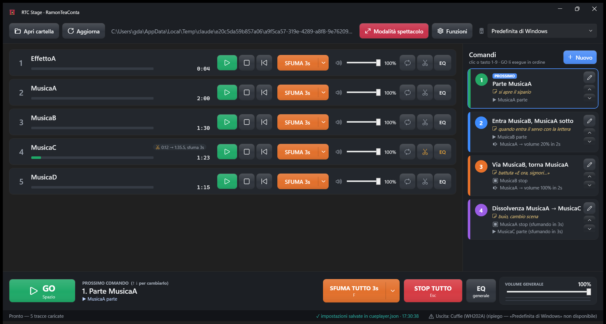
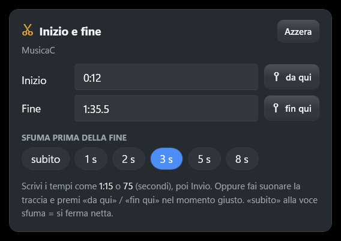
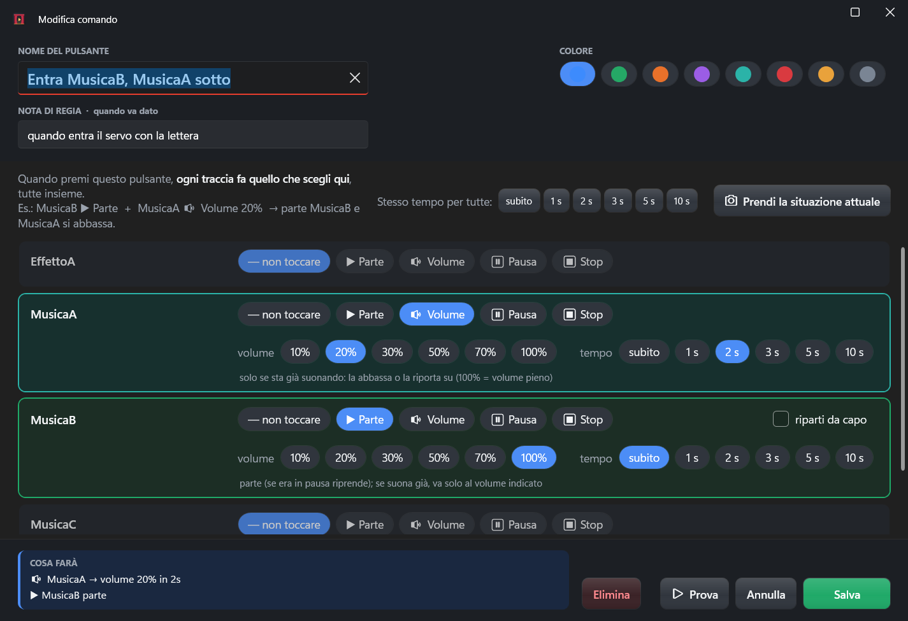
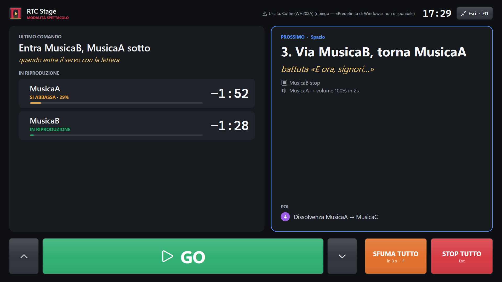
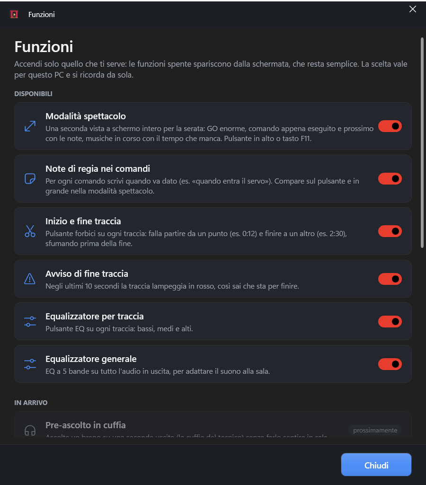

Lettore di musiche per spettacoli teatrali — Manuale d'uso
RAMONTEACONTA
Cosa fa: fa partire, sfumare, abbassare e fermare le musiche di uno spettacolo con un clic o un tasto,
anche più musiche insieme, con pulsanti di comando che prepari tu, e una vista a schermo intero per la serata.
Dove funziona: Windows 10 e 11. Nessuna installazione, nessuna connessione a internet.
Negli esempi le musiche si chiamano MusicaA, MusicaB, MusicaC… e
EffettoA: al loro posto ci saranno i tuoi file.
Indice
Avvio e requisiti
Preparare la cartella dello spettacolo
La schermata principale
Controlli di ogni traccia
Inizio e fine di una traccia
I comandi: «premo il pulsante e succede…»
Creare e modificare un comando
Esempi pronti
Durante lo spettacolo: GO, tasti, colori
Modalità spettacolo
Sfumare e fermare tutto
Equalizzatore
Funzioni: accendere e spegnere gli strumenti
Uscita audio
Salvataggio delle impostazioni
Prima dello spettacolo: lista di controllo
Problemi e soluzioni
1. Avvio e requisiti
Il programma è un unico file: RTCStage.exe. Doppio clic per aprirlo. Non serve installare nulla.
Puoi tenerlo su una chiavetta USB insieme alla cartella delle musiche e usarlo su qualsiasi PC Windows 10/11 a 64 bit.
Al primo avvio Windows può mostrare «PC protetto da Windows»: scegli Ulteriori informazioni → Esegui comunque.
Il programma riapre da solo l'ultima cartella usata.
Finché è aperto, il PC non va in sospensione e lo schermo non si spegne.
2. Preparare la cartella dello spettacolo
Crea una cartella (es. Spettacolo) e mettici dentro tutti i file audio dello spettacolo.
Le tracce compaiono in ordine di nome. Per decidere l'ordine rinominale con un numero davanti:
01_MusicaA.mp3, 02_MusicaB.mp3, 03_EffettoA.wav…
Nel programma premi Apri cartella e scegli la cartella.
Se aggiungi, togli o sostituisci un file mentre il programma è aperto, l'elenco si aggiorna da solo dopo un secondo
(c'è anche il pulsante Aggiorna). Un file che non si riesce a leggere compare in rosso.
Tutte le musiche vengono caricate in memoria all'apertura: quando premi un pulsante il suono parte subito.
3. La schermata principale

La schermata principale con una cartella di esempio e quattro comandi già preparati (con note di regia).
Una riga per ogni file, con i controlli manuali. Servono per le prove e per intervenire a mano.
A destra: Comandi
I tuoi pulsanti. Ognuno fa fare qualcosa a una o più tracce insieme. È il modo consigliato di gestire lo spettacolo.
In basso
GO (esegue il prossimo comando), SFUMA TUTTO con la sua durata, STOP TUTTO, EQ generale, Volume generale con indicatore di livello.
Barra di stato
Messaggi, conferma di salvataggio («✓ impostazioni salvate…»), uscita audio in uso.
4. Controlli di ogni traccia
Controllo
Cosa fa
▶ / ⏸
Un solo pulsante: verde = fai partire (o riprendi dalla pausa), giallo = metti in pausa.
⏹ Stop
Ferma la traccia e la riporta all'inizio.
⏮ Da capo
Fa ripartire la traccia dall'inizio.
SFUMA 3s ▾
La parte grande abbassa la traccia fino al silenzio e la ferma. La freccetta ▾ apre il menu per scegliere la durata (1–30 s).
Volume (cursore)
Volume della traccia, da 0 a 100%. Si regola anche con la rotella del mouse (2% per scatto).
🔁 Loop
Acceso (blu) = la traccia ricomincia da sola quando finisce.
✂ Inizio e fine
Fai suonare solo un pezzo della traccia. Diventa giallo se impostato. Vedi capitolo 5.
EQ
Equalizzatore della traccia (bassi, medi, alti). Diventa giallo se non è piatto.
Barra di avanzamento
Tempo trascorso e tempo che manca. Clic sulla barra = salta a quel punto.
Importante: il volume della riga è il volume «massimo» della traccia. Le percentuali dei comandi si applicano sopra
questo valore: se la riga è al 10%, un comando «volume 100%» porta la traccia al 10%. Normalmente lascia le righe al 100%.
5. Inizio e fine di una traccia
Con il pulsante ✂ scegli da che punto parte la traccia e dove finisce. Esempio: MusicaC parte da 0:12 e si ferma a 1:35, sfumando negli ultimi 3 secondi.
Inizio / Fine: scrivi il tempo come 1:15 oppure in secondi (75), poi Invio. Vuoto = dall'inizio / fino alla fine del file.
da qui / fin qui: fai suonare la traccia e premi il pulsante nel momento giusto: prende il punto in cui si trova adesso.
Sfuma prima della fine: «subito» = si ferma netta; 1–8 s = sfuma in quel tempo e arriva a zero proprio sul punto di fine.
Azzera: torna alla traccia intera.
Stop, «da capo», il loop e i comandi usano questi punti: la traccia riparte sempre dal suo inizio.
Sulla riga compare un'etichetta con ✂ e i tempi scelti.

Il pannello Inizio e fine.
6. I comandi: «premo il pulsante e succede…»
Un comando è un pulsante colorato nel pannello di destra. Quando lo premi, ogni traccia fa quello che hai deciso tu, tutte nello stesso istante.
Azione
Cosa succede
Si regola
— non toccare
La traccia resta com'è.
—
▶ Parte
La traccia parte. Se era in pausa riprende da dove era. Se sta già suonando non riparte: va solo al volume indicato.
volume (10…100%), tempo (subito…10 s), «riparti da capo»
🔉 Volume
Solo per una traccia che sta già suonando: la abbassa o la riporta su, senza fermarla. Se la traccia è ferma non succede nulla.
volume, tempo
⏸ Pausa
La traccia si ferma dov'è. Un successivo «▶ Parte» la fa riprendere da lì.
—
⏹ Stop
La traccia si ferma e torna all'inizio. Con un tempo > 0 sfuma prima di fermarsi.
tempo
Volume 100% = volume pieno della traccia; 20% = sottofondo leggero; 10% = appena udibile.
Tempo «subito» = cambio istantaneo. 1…10 s = il passaggio avviene gradualmente in quel tempo.
Quando una traccia sale e un'altra scende nello stesso comando, il volume complessivo resta costante: niente «buco» a metà.
La nota di regia (es. «quando entra il servo») compare in giallo sul pulsante e in grande nella modalità spettacolo.
7. Creare e modificare un comando
1
Nel pannello Comandi premi + Nuovo (per modificare un comando esistente premi la matita ✎ accanto).
2
Scrivi il nome del pulsante, la nota di regia (facoltativa) e scegli un colore.
3
Per ogni traccia che deve fare qualcosa clicca ▶ Parte, 🔉 Volume, ⏸ Pausa o ⏹ Stop. Compaiono volume e tempo, già impostati su valori comodi (Parte: 100% subito · Volume: 20% in 2 s · Stop: subito).
4
Controlla il riquadro COSA FARÀ in basso: riassume in parole quello che succederà.
5
Prova lo esegue subito per sentirlo. Salva lo aggiunge al pannello. Annulla chiude senza salvare. Elimina lo cancella.

Editor del comando «Entra MusicaB, MusicaA sotto»: MusicaB ▶ Parte al 100% subito, MusicaA 🔉 Volume 20% in 2 secondi.
Stesso tempo per tutte: imposta lo stesso tempo su tutte le tracce del comando in un clic.
Prendi la situazione attuale: copia nel comando le tracce che stanno suonando adesso, al loro volume attuale.
Le frecce ⌃ ⌄ accanto a ogni comando ne cambiano l'ordine.
8. Esempi pronti
1 · Parte MusicaA
si apre il sipario
MusicaA ▶ Parte · 100% · subito
2 · Entra MusicaB, MusicaA sotto
quando entra il servo con la lettera
MusicaB ▶ Parte · 100% · subito MusicaA 🔉 Volume · 20% · 2 s
3 · Via MusicaB, torna MusicaA
battuta «E ora, signori…»
MusicaB ⏹ Stop · subito MusicaA 🔉 Volume · 100% · 2 s
4 · Dissolvenza MusicaA → MusicaC
buio, cambio scena
MusicaA ⏹ Stop · 3 s MusicaC ▶ Parte · 100% · 3 s
Voglio…
Imposta nel comando
fermare MusicaA e far partire subito MusicaB
MusicaA ⏹ Stop subito · MusicaB ▶ Parte 100% subito
far entrare MusicaB piano piano
MusicaB ▶ Parte 100% in 5 s
un effetto sopra la musica, senza toccarla
EffettoA ▶ Parte 100% subito (le altre: non toccare)
abbassare tutto per un dialogo e poi tornare su
comando 1: MusicaA 🔉 Volume 30% in 2 s · comando 2: MusicaA 🔉 Volume 100% in 2 s
chiudere la scena sfumando
MusicaA ⏹ Stop in 5 s
usare solo un pezzo di una musica
sulla riga: ✂ Inizio 0:12, Fine 1:35, sfuma 3 s · nel comando: ▶ Parte
9. Durante lo spettacolo: GO, tasti, colori
GO (o Spazio) esegue il comando segnato PROSSIMO e passa al successivo.
L'ultimo eseguito mostra ✓ ESEGUITO. Se non hai creato comandi, GO fa partire una dopo l'altra le tracce dell'elenco.
Tasto
Azione
Spazio
GO: esegue il prossimo comando
1 … 9
esegue direttamente il comando con quel numero
↑↓
cambia il prossimo comando
F
sfuma tutto
Esc
STOP TUTTO immediato
F11
apre / chiude la modalità spettacolo
Colore / scritta
Significato
IN RIPRODUZIONE
suona a volume pieno
IN ENTRATA · %
sta salendo
SI ABBASSA · %
sta scendendo verso un volume di sottofondo
SOTTOFONDO · %
suona a volume ridotto e continua
IN SFUMATURA
sta sfumando e poi si fermerà
IN PAUSA
in pausa
lampeggio rosso
mancano meno di 10 secondi alla fine (avviso di fine traccia)
Un doppio colpo involontario di GO entro un terzo di secondo viene ignorato, così non si salta un comando per sbaglio.
10. Modalità spettacolo
Una seconda vista, pensata per la serata: si apre con il pulsante Modalità spettacolo in alto o con F11,
occupa tutto lo schermo ed è leggibile anche da lontano e al buio. La schermata normale resta com'è: con Esci o F11 ci torni.

Modalità spettacolo: a sinistra l'ultimo comando e le musiche in corso con il tempo che manca; a destra il prossimo comando con la sua nota di regia; in basso GO.
Ultimo comando: nome e nota di regia del comando appena dato.
In riproduzione: ogni musica che suona, con il suo stato e il tempo che manca in grande; negli ultimi 10 secondi lampeggia in rosso.
Prossimo: il comando che partirà con GO, la sua nota di regia in grande e cosa farà. Sotto, «Poi»: i comandi successivi.
In basso: frecce per cambiare il prossimo comando, GO enorme, SFUMA TUTTO, STOP TUTTO.
Funzionano gli stessi tasti (Spazio, 1-9, F, Esc, frecce). In questa vista non si può modificare nulla per sbaglio.
11. Sfumare e fermare tutto
SFUMA su una traccia: la porta al silenzio nel tempo scelto con la freccetta ▾ e la ferma.
SFUMA TUTTO (tasto F): sfuma insieme tutte le tracce che suonano; la durata si sceglie con la ▾ accanto.
STOP TUTTO (tasto Esc): ferma subito tutto. È il pulsante di emergenza.
A mano: trascina il volume della traccia o usa la rotella del mouse sopra il cursore.
12. Equalizzatore
EQ di una traccia (pulsante EQ sulla riga): Bassi, Medi, Alti, da −12 a +12 dB. Corregge il suono di un singolo file.
EQ generale (in basso): cinque bande (80 Hz, 250 Hz, 1 kHz, 3,5 kHz, 10 kHz) su tutto l'audio in uscita, per adattarsi alla sala.
Doppio clic su un cursore = 0 dB. Rotella = ±0,5 dB. Azzera = tutto piatto. A 0 dB l'EQ non modifica il suono.
Alzare molto i bassi aumenta il volume e può distorcere: spesso è meglio abbassare le altre bande.
13. Funzioni: accendere e spegnere gli strumenti
Il pulsante Funzioni in alto apre una pagina con un interruttore per ogni strumento. Quelli spenti spariscono dalla schermata,
che così resta semplice. La scelta vale per il PC su cui la fai.

La pagina Funzioni. In fondo, nella sezione «In arrivo», le funzioni previste per le prossime versioni.
Interruttore
Se lo spegni
Modalità spettacolo
sparisce il pulsante in alto e F11 non fa nulla
Note di regia nei comandi
le note non si vedono più (restano salvate) e l'editor non mostra il campo
Inizio e fine traccia
sparisce il pulsante ✂ (i tagli già impostati restano attivi)
Avviso di fine traccia
niente lampeggio negli ultimi 10 secondi
Equalizzatore per traccia / generale
spariscono i pulsanti EQ (le regolazioni già fatte restano attive)
14. Uscita audio
In alto a destra scegli la scheda audio: Predefinita di Windows oppure una specifica (altoparlanti, scheda USB, mixer).
Se l'uscita scelta non si può aprire (es. cuffie Bluetooth spente ma ancora impostate in Windows), il programma passa da solo a un'altra uscita funzionante
e in basso a destra scrive ⚠ Uscita: … (ripiego). Quando l'uscita scelta torna disponibile ci ritorna.
Per lo spettacolo usa un'uscita via cavo (jack o scheda USB). Le cuffie e gli altoparlanti Bluetooth hanno ritardo e possono disconnettersi.
15. Salvataggio delle impostazioni
Non c'è niente da salvare a mano. Ogni modifica viene scritta dopo meno di un secondo nel file cueplayer.jsondentro la cartella delle musiche; in basso compare «✓ impostazioni salvate» con l'ora.
Vengono salvati: volume, loop, sfumata, inizio/fine ed EQ di ogni traccia; EQ e volume generale; durata di «Sfuma tutto»; tutti i comandi con le note.
Riaprendo il programma ritrovi tutto com'era. Copiando la cartella (con cueplayer.json) su un altro PC, lo spettacolo viaggia con le sue impostazioni.
Le impostazioni sono legate al nome del file: rinomina i file prima di preparare i comandi.
16. Prima dello spettacolo: lista di controllo
Apri la cartella dello spettacolo e controlla che nessuna traccia sia rossa.
Controlla che il volume di ogni riga sia quello voluto (di solito 100%).
Scegli l'uscita audio giusta e verifica in basso a destra che non ci sia «(ripiego)».
Fai una prova completa di tutti i comandi in ordine, con GO, sull'impianto della serata.
Regola il volume generale e, se serve, l'EQ generale in sala.
Attiva in Windows «Non disturbare» e disattiva i suoni di sistema. Collega il PC alla corrente.
Controlla che il PROSSIMO sia il primo comando, poi apri la modalità spettacolo (F11).
17. Problemi e soluzioni
Problema
Cosa controllare
Non sento una traccia
Volume della sua riga (non a 0–1%); volume generale; volume di Windows; uscita audio in alto a destra; eventuale ✂ con inizio oltre la fine del brano.
Non sento niente
Barra in basso a destra: «Nessuna uscita audio» o «(ripiego)»? L'indicatore verde sotto il volume generale si muove se il programma sta mandando suono.
Spazio / i tasti non fanno nulla
Clicca una volta sulla finestra del programma: i tasti vanno alla finestra attiva. Se stai scrivendo in un campo di testo, i tasti scrivono lì.
Un comando «🔉 Volume» non fa niente
Agisce solo su tracce che stanno già suonando. Per far partire una traccia usa «▶ Parte».
La musica finisce troppo presto
Il file è più corto del necessario: attiva 🔁 Loop, oppure controlla il punto di fine (✂).
Un comando segna «file mancante»
Il file è stato rinominato o spostato: apri il comando (✎) e scegli l'azione sulla traccia con il nome nuovo.
Errori strani
Il programma registra gli errori in %AppData%\CuePlayer\errori.log e continua a suonare.